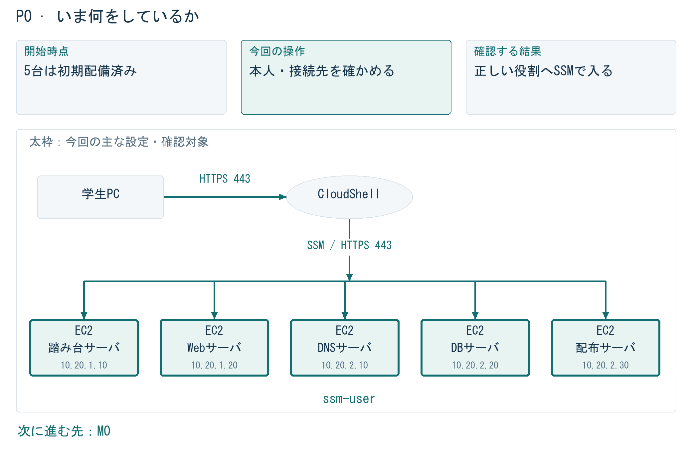

P0 自分の環境と実行場所
はじめに：接続・操作の約束 · 練習 P0〜P6 · 課題 M0〜M6 · ブラウザで確認する
2026-11-13 · D12 P/M r1.5
配布版の有効期限：2027年1月31日末（UZT）。
始める前に
共通の接続・操作を確認する。対応する自力課題はM0。課題の判定方法はブラウザ確認手順を使う。
学ぶこと
CloudShell、Windows、5台のUbuntuを区別し、正しいサーバーへSSMで入り、採点を自己確認できる。
課題
自分のLab ID・配布ID・5役割のinstance IDを確認する。これは提供済み環境の確認で、0点。5台がまだない場合は先に初期配布手順を完了する。作成済みならcreate・鍵生成・採点再登録を繰り返さない。
今回の見取り図

図の太枠が今回の主な対象です。設定操作は各手順の実行場所で行い、図の矢印は接続・確認の向きを表します。 SGの通信許可は初期配備済みで、今回の課題はサーバー内の設定です。 SSMの矢印はAWSの接続管理を使う経路で、EC2の443番受信を開く指示ではありません。


仕組みを理解する
始める前の状態:
教師が初期配布と個別登録を終えた、本人の5台を使う。
このPで変えること:
対象account・役割・実行場所を見分け、公開教材資源を準備する。
AWSコンソールはAWS資源を管理する画面、CloudShellはAWS CLIを使う自分の端末、SSMは選んだEC2のOS内へ入る接続である。SSMへ入っても5台が一つのOSになるわけではない。Webの/var/wwwとDBの/var/wwwは別の保存先である。サーバーの役割と、そこで操作するOS userを別々に確認する。
操作例：一つずつ実行する
P0.1 本人のCloudShellと使用版を確認する
実行場所:
CloudShell（学生本人のAWS）
目的と操作:
AWS Academyの自分のClassからAWSを開き、CloudShellを起動する。LAB_IDを教師案内の値に置き換える。INSTALLは後の教材配置で使う保存先。初期導入済みのファイルとAWSアカウントを確認する。課題の判定は最後にブラウザで行う。
入力するコマンド（番号はこの手順内の順番）
# 1. 教師から案内された自分のLab IDを変数へ入れる。
LAB_ID='YOUR-LAB-ID'
# 2. 使用する署名配布版のIDを変数へ入れる。
COURSE_ID='web-course-class193548-20261103-r3'
# 3. 自分の配布版が導入されている保存先を変数へ入れる。
INSTALL="$HOME/.local/share/jdu-web/courses/$COURSE_ID/$LAB_ID"
# 4. 現在操作中のAWSアカウント番号を表示する。
aws sts get-caller-identity --query Account --output text
# 5. 初期導入のファイルがあればINSTALL_OKを表示する。
test -f "$INSTALL/activate.sh" && printf 'INSTALL_OK\n'
コマンド・設定値の意味:
INSTALLは初期導入済みの場所を表す変数。test -fはファイルの有無を調べるだけで、環境を作り直さない。AWS本人確認と課題の合格確認は別。
期待する結果と読み方:
AWS accountは教師から指定された自分のもの。INSTALL_OKなら初期導入のファイルがある。これは課題合格ではなく、後の操作を始める準備確認。
うまくいかないとき:
No such fileなら初期導入とinstallを確認する。旧版は全課題に対応しない。期限切れは教師へ更新を依頼し、日付の書換えで回避しない。
P0.2 5台のinstance IDを記録する
実行場所:
学生本人のAWSコンソール
目的と操作:
EC2のInstances一覧で自分のLabIdとDeploymentIdのタグを照合し、bastion/web/dns/db/repoのinstance IDを手元の作業表へ記入する。名前だけで選ばない。公開IPv4はbastionとwebだけにある。SSM接続は公開IPではなくinstance IDを使う。
コマンド・設定値の意味:
instance IDはEC2を識別する値、roleは授業内の担当、公開IPは外から接続する宛先である。公開IPが変わっても同じinstance IDなら同じEC2として追跡できる。作業表には5役割とIDの組を記録する。
期待する結果と読み方:
5台ともrunning、SSM Online。private IPは本書の共通表と一致する。公開IPv4は停止・起動後に変わることがある。
うまくいかないとき:
別Lab・別account・不明な台を操作しない。停止中は教師の起動案内に従う。ResetやTerminateで開始状態を作り直さない。
P0.3 SSMで入り、戻る
実行場所:
CloudShell（学生本人のAWS）
目的と操作:
EC2で確認したWebのIDに置き換えて実行する。接続後はCloudShellではなくUbuntuの端末になる。id -unはSSM管理userを、bootstrap.jsonのroleはサーバー役割を示す。最後のexitを1回実行するとCloudShellへ戻る。
入力するコマンド（番号はこの手順内の順番）
# 1. CloudShellから指定EC2へSSM接続する。接続完了後に次へ進む。
aws ssm start-session --target i-YOUR-WEB-INSTANCE-ID
# 2. この端末で操作しているOSユーザー名を表示する。
id -un
# 3. 接続中のサーバーのホスト名を表示する。
hostname
# 4. bootstrap情報のroleだけを読み、接続先の役割を確認する。
python3 -c 'import json;print(json.load(open("/etc/jdu-web/bootstrap.json"))["role"])'
# 5. 現在の作業ディレクトリを表示する。
pwd
# 6. 現在のサーバーへの接続を閉じ、CloudShellへ戻る。
exit
コマンド・設定値の意味:
最初のstart-sessionだけをCloudShellで実行し、接続完了を待ってから残りを1行ずつ入力する。id -unはuser、hostnameはOSのhost名、roleは教材上の役割を読む。exitは現在の接続を1段だけ戻す。
期待する結果と読み方:
userはssm-user、roleはweb。以降もサーバーを替えるたびに確認する。SSHで入ったUbuntuのuserはubuntuになる場合がある。
うまくいかないとき:
TargetNotConnectedならrunning/SSM Online/region us-east-1を確認する。SGを全面開放したりWindowsへ鍵をダウンロードしない。
P0.4 公開教材資源だけを準備する
実行場所:
CloudShell（学生本人のAWS）
目的と操作:
本教材zipをCloudShellのActions→Upload fileでアップロードし、unzip web-lab-pm-r1.zipで展開する。resourcesへ移動し次を実行する。補助処理は本人の署名版と元5台を照合し、Web/DBへアプリ資源・SQL・秘密の非表示入力helperを置くだけ。サービスやDBは構築しない。秘密は送らない。
入力するコマンド（番号はこの手順内の順番）
# 1. 作業場所を $HOME/web-lab-pm-r1/resources へ移す。
cd "$HOME/web-lab-pm-r1/resources"
# 2. 署名版と本人の5台を照合し、公開教材をWeb/DBへ配置する。
python3 -B stage_resources.py --installation "$INSTALL"
コマンド・設定値の意味:
公開教材資源はアプリやSQLの材料であり、完成済みのサービスではない。stage_resources.pyをCloudShellで実行して初めてWeb/DBへ配置される。Windowsへzipを保存しただけではEC2内のファイルは増えない。
期待する結果と読み方:
PUBLIC_LESSON_RESOURCES_READY=web と =db。各台の/var/lib/jdu-web/lesson-resources-r1に公開ファイルがある。既存の異なるファイルは上書きしない。
うまくいかないとき:
初期化未完・版違い・期限切れならここで止めて教師へ状況を知らせる。検証用fixtureや完成アプリの自動適用ツールで代用しない。
P0.5 ブラウザで準備を確認する
実行場所:
自分のPCのブラウザ：Web Portal
目的と操作:
ブラウザ確認手順からWeb Portalを開く。学校Googleでログインし、本人AWSとの連携を済ませ、P0を選んで「この課題を確認する」を押す。結果が処理中なら「結果を更新する」を押す。M0も同じ方法で確認する。P0/M0は準備確認で成績に加算しない。
コマンド・設定値の意味:
ブラウザの確認結果は自動保存される。結果のPASS/FAIL/UNKNOWNと、処理・保存の状態を分けて読む。PとM0は保存されても成績に加算しない。
期待する結果と読み方:
本人のLab・課題ID・確認時刻が正しい。各checkの結果と保存状態を読む。処理完了と保存を確認する。UNKNOWNは観測できなかった状態で、合格とは別。
うまくいかないとき:
失敗行のcheck ID・実行時刻・対象roleだけを相談に使う。token・password・本人用URLを共有しない。
P0.6 RDPで踏み台のデスクトップを開く
実行場所:
学生のWindows PC（共有アカウント）
目的と操作:
EC2で確認した現在の踏み台の公開IPv4を使う。Windowsキー＋Rを押し、mstsc /promptを入力してEnter。ComputerへそのIPを指定し、userはlabuser、passwordは本人が初期配備で設定したRDP用を使う。Windowsアカウントのpasswordではない。「資格情報を記憶する」は選ばない。青いxrdp loginが出たらSession=Xorgを確認し、labuserで入る。
入力するコマンド（番号はこの手順内の順番）
# 1. WindowsのRDP接続画面を開き、資格情報の入力を求める。
mstsc /prompt
コマンド・設定値の意味:
RDPは踏み台の画面と入力を運ぶ。踏み台内Firefoxからの通信の送信元はWindowsではなく踏み台になる。日本語/英語などのキー配列はpasswordの記号入力にも影響するため、表示言語と配列を区別する。
期待する結果と読み方:
UbuntuのXfceデスクトップとFirefoxが開く。これは踏み台内のbrowserであり、Windows側のbrowserとは別。RDPのlabuserにはsudo管理権限がないため、構築はCloudShellからSSM/ssm-userで行う。
うまくいかないとき:
Login failedならuser名と日本語/英語等のkeyboard配列を確認する。passwordを会話へ送らない。到達しない場合は現在のIPと許可された接続元CIDRを教師と確認し、3389を全公開しない。終了時はRDP内の自分の作業を保存し、接続を閉じる。
理解の確認（採点外）
WebへSSM接続したままDBの手順を入力すると、どのサーバーが変わるか？
考え方:
現在接続中のWebが変わる。exitでCloudShellへ戻り、DBのinstance IDへ接続し直す。